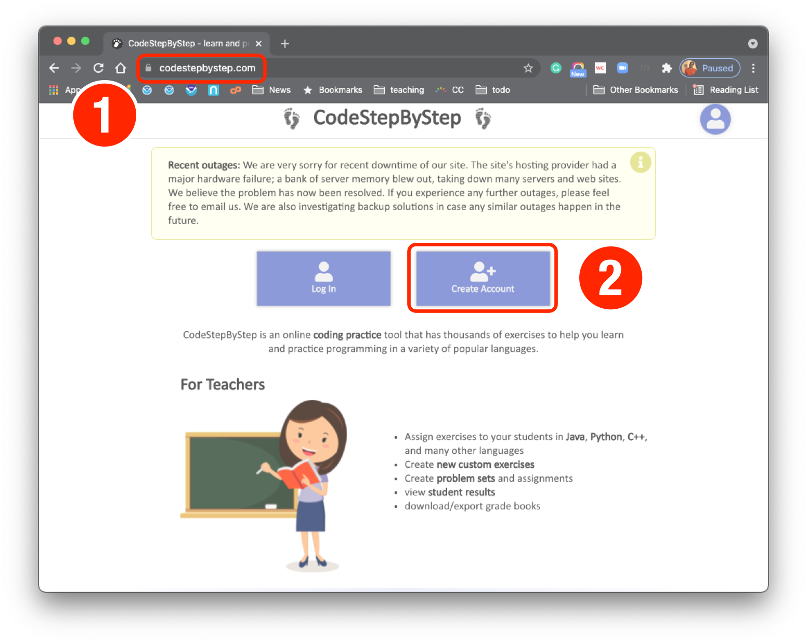
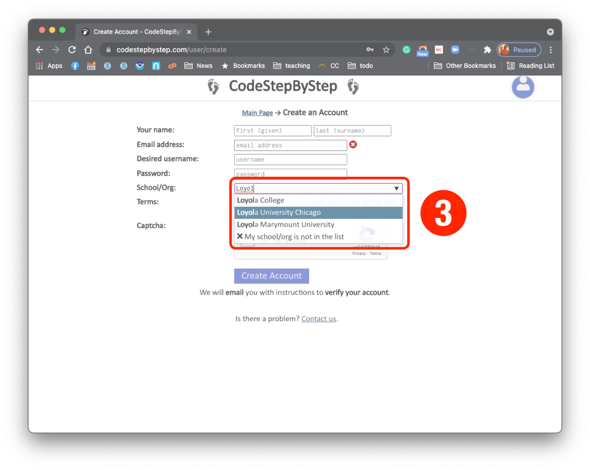
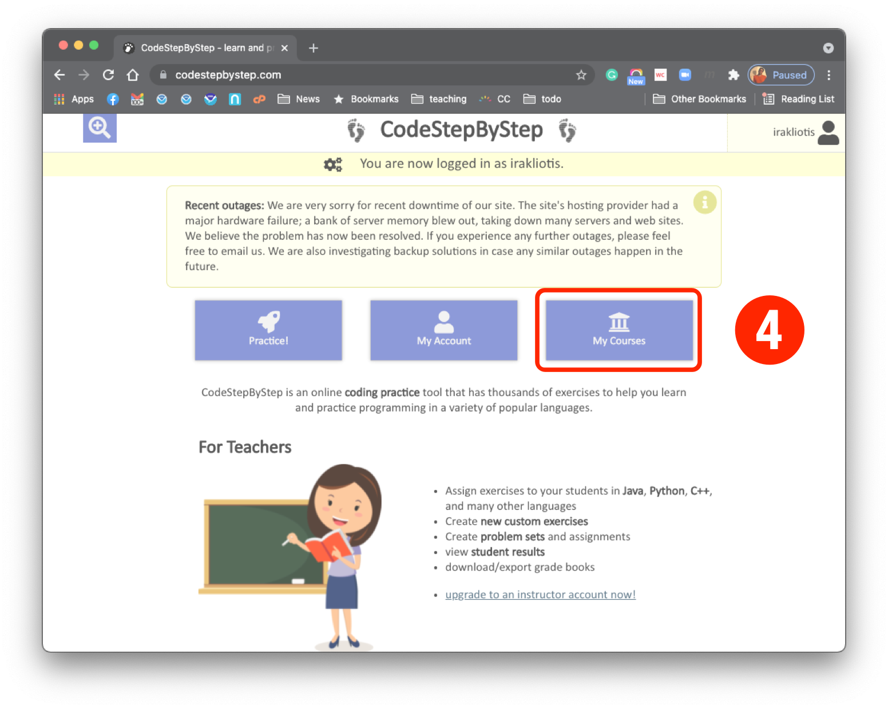
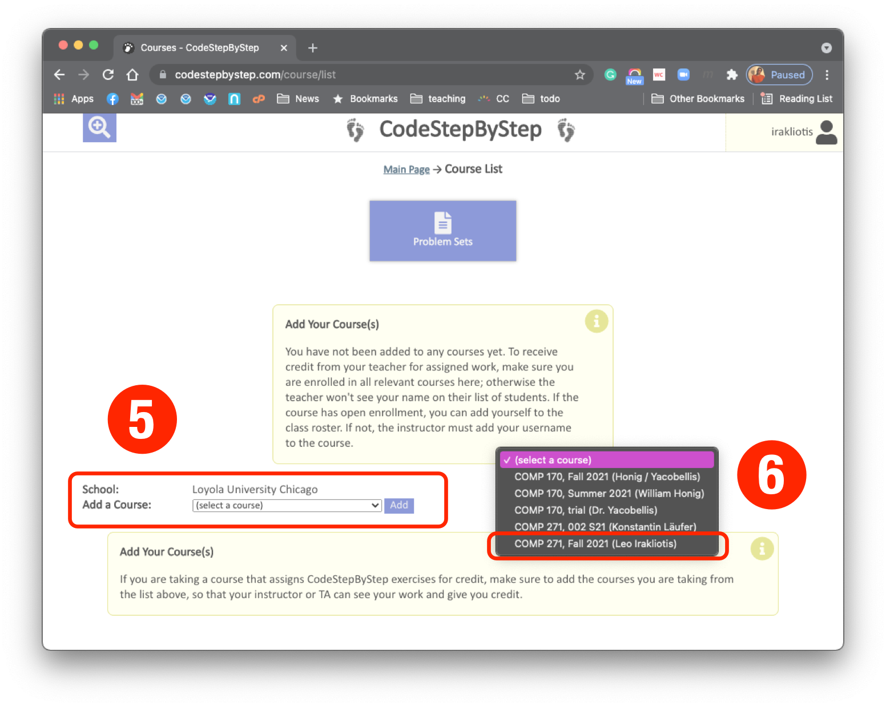
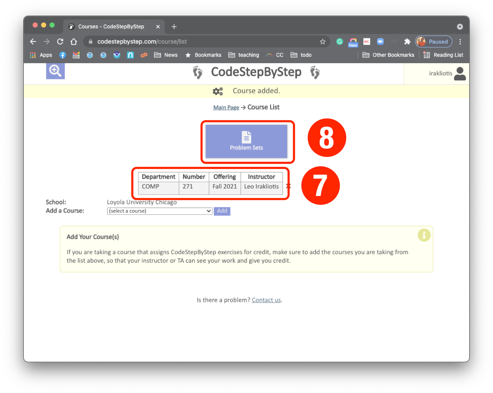
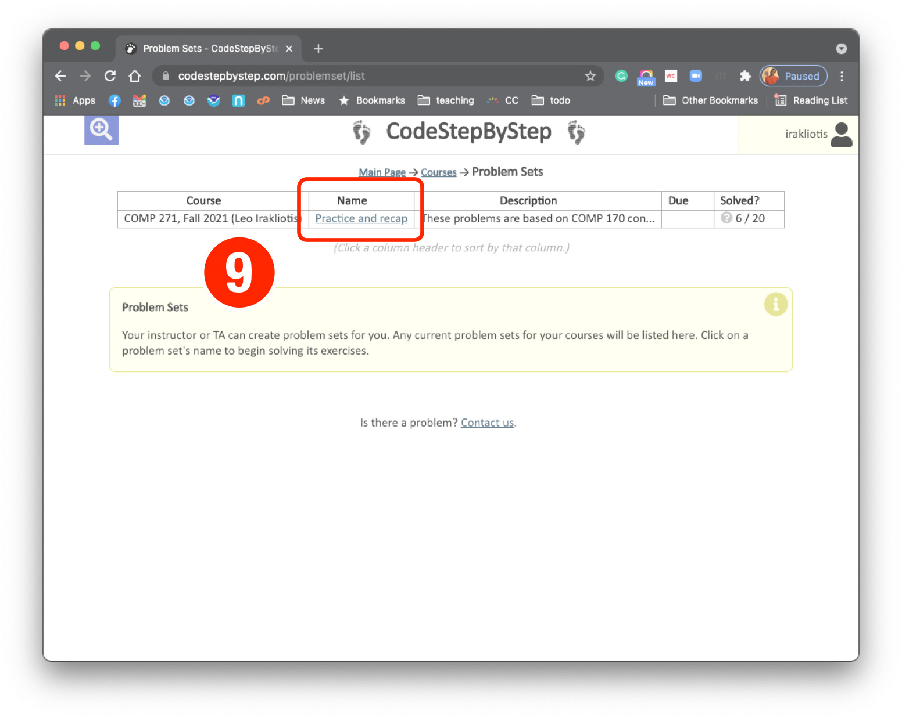
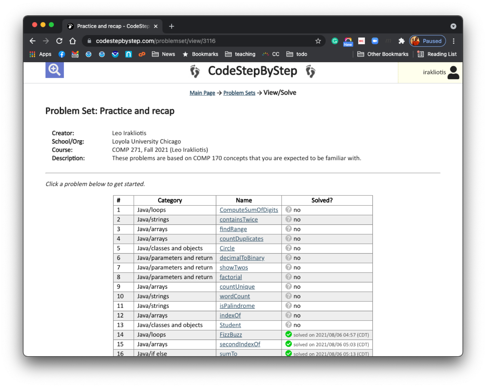

Getting Started With Code Step By Step#
Code Step By Step is a website to practice programming skills. We use it for assignments in COMP 170 and COMP 271. The following instructions walk you through setting up an account with Code Step By Step. Before you begin the registration process make sure that you have the following information:
your official LUC email address; that’s the email address ending in @luc.edu;
the course number, semester, and the name of your instructor, e.g. COMP 271, F21, Irakliotis.
Part 1: Create your account#
(Skip to Part 2 if you already have an account with Code Step By Step)

To create your account, visit Code Step By Step (1) and click on Create Account (2).

Complete all the fields on the Create An Account page, using your @luc.edu email address. For School/Org, as soon as you start typing “Loyola …”, you will be given a few autocomplete choices in a pull down menu (3). Please make sure that you select “Loyola University Chicago”.
After you complete the registration process, you will receive an email to verify your account. Once you verify the account, you can login to Code Step By Step. (The verification email may end up in your Spam folder, so make sure to look there too.)
Part 2: Sign up for your course#

At this stage, I assume that you have completed Step 1 earlier and that your account is verified. You can return to the Code Step By Step site and login using your @luc.edu email address and the password you provided during Step 1.
After you login, click on My Courses (4).

From the Add a Course: drop-menu select the course you are signing up for and click Add (5). Make sure that your selection matches the course number, term, and instructor (6).

You will see the course now listed (7) and you can click on Problem Sets (8) to find what is being assigned to you.

Problem sets are given a name. Click on a problem set name (9) to begin working on a problem set.
